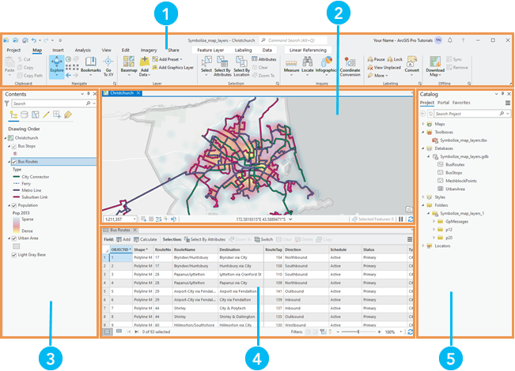
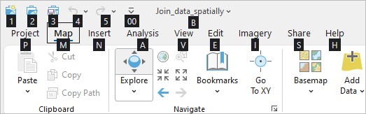
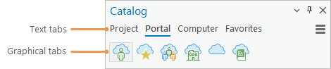
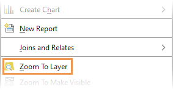
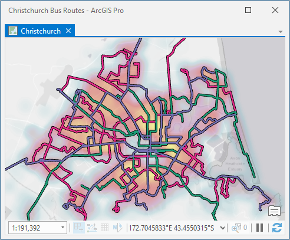
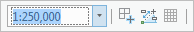
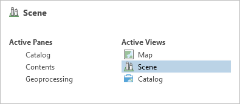

Use ArcGIS Pro with a keyboard
You can navigate the ArcGIS Pro user interface and run commands from the keyboard using keyboard shortcuts and Mouse Keys. Some tasks, such as selecting features on a map or drawing map frames on a layout, require holding the left mouse button while moving the mouse, and then releasing the mouse button (clicking and dragging). These tasks can only be accomplished from the keyboard with Mouse Keys.
The main parts of the user interface are the ribbon, panes, and views, shown in the image below. The ribbon and panes organize commands for working with views. Views are work areas, such as maps, tables, layouts, and charts. For a more detailed description of the user interface, see Introduction to ArcGIS Pro.
 |
You can use Mouse Keys and keyboard shortcuts to navigate the user interface. |
Component | Description |
|---|---|
The ribbon | |
A map view | |
The Contents pane of a map | |
A table view | |
The Catalog pane |
Use Mouse Keys and Sticky Keys
To control the mouse pointer's movement and actions with the keyboard as you would control them with a mouse, you can use Mouse Keys.
Many keyboard shortcuts require you to press two keys at once, which may be difficult. Sticky Keys allows you to complete keystroke combinations that include multiple keys by pressing one key at a time. You can turn on Sticky Keys and other options that make input devices easier to use.
Use keyboard shortcuts
The following sections describe keyboard shortcuts for working with the ArcGIS Pro interface. For the best experience, you may want to use keyboard shortcuts in combination with Mouse Keys.
On the Keyboard Shortcuts dialog box, you can browse and search for keyboard shortcuts, customize existing shortcuts, and add new shortcuts. The complete list of default keyboard shortcuts can also be found in ArcGIS Pro keyboard shortcuts.
Common keyboard shortcuts
The table below lists common keyboard shortcuts for navigating the user interface.
|
Keyboard shortcut |
Action |
|---|---|
|
Alt or F10 |
Enable access keys and show KeyTips on the ribbon.  Note: Note:Press the key or keys indicated by the KeyTip to select tabs and run commands. |
Alt+Hyphen (-) | Access options to float, dock, or close the active view or pane. |
|
Right arrow key or Left arrow key |
Move from one tab to another in the active pane. |
|
Tab or Shift+Tab |
Move from one command to the next on a ribbon tab. Move from one item to the next in a pane, view, dialog box, or page. |
|
Up arrow key or Down arrow key |
Move among elements in a list. |
|
Alt+Down arrow key |
Open a drop-down menu or list. |
|
Esc |
Close a drop-down menu or list. |
|
Enter or Spacebar |
Run a command or open a ribbon gallery or dialog box launcher. |
|
Shift+Windows key+F10 | Open a context menu (pop-up menu) for a selected item. Note:The Windows Menu key also works in most cases. |
|
Alt+F7 |
Browse available panes and change the active pane. |
| Ctrl+Tab | Browse available views and change the active view. |
Ctrl+F6 | Switch the active view to the next available view. |
Ctrl+F4 | Close the active view. |
Create or open a project with keyboard shortcuts
On the start page, you can use the Tab key and the arrow keys to start new projects and open existing projects. The following workflow shows how to create a project from the Map template in the default project location.
- Start ArcGIS Pro.
- On the start page, press the Tab key as needed to move to the new project templates.
By default, the Map template is selected. Optionally, you can use the arrow keys to select a different default template.
- Press the Enter key.
- On the New Project dialog box, press the Tab key to move the cursor into the Name text box.
- Press the Delete key as needed to remove the default project name.Note:
If you are using the numeric keypad with Mouse Keys turned on, the Delete key has been reprogrammed. Press the Right Arrow key to move to the end of the default project name and press Backspace to remove it.
- Type a name for the project.
- Press the Tab key as needed to select the OK button.
- Press the Enter key to create the project.
Pan and zoom in a map
When a map view is active in your project, you can pan and zoom with arrow keys and keyboard shortcuts. For a detailed workflow, in the Navigate maps and scenes topic, see the Use the keyboard to navigate section. For additional shortcuts, see Keyboard shortcuts for navigation.
- In a project with an open map, press Ctrl+F6 as needed to make the map view active.
- Press the arrow keys to pan the map in different directions. Press and hold a key to pan continuously.
 Tip:
Tip:Press two arrow keys at the same time to pan in a non-cardinal direction.
- Press the Equals (=) key to zoom in. Press and hold the key to zoom continuously.
- Press the Hyphen (-) key to zoom out. Press and hold the key to zoom continuously.
- Press the Comma (,) key to go to the previous extent.
- Press the Period (.) key to go to the next extent.
Use keyboard shortcuts on the ribbon
The following video explains how to use KeyTips to select ribbon tabs and run commands using the keyboard.
- Video length: 0:53
- This video was created using ArcGIS Pro 3.2
The ribbon is a set of tabs and commands arranged horizontally at the top of the application. Above the ribbon are the Quick Access Toolbar, the Sign-in Status menu, and the Notifications button . For keyboard navigation, these are treated as part of the ribbon.
You can select ribbon tabs and run commands with access keys. Press the Alt key or the F10 key to enable access keys. KeyTips appear on the ribbon, showing which access key or keys to press. When you press a key to select a tab, additional KeyTips appear for the commands on that tab.
 |
The following workflow shows how to change the basemap in a map view using access key.
- In an open project with an open map view, press the Alt key, or the F10 key, to enable access keys.
- Press the M key to select the Map tab.
- Press the B key and then press the M key to open the Basemap gallery.
- Press the Down Arrow key to move the cursor into the list of basemaps. Press the arrow keys as needed to select a basemap.
- Press Enter to apply the new basemap.
Use keyboard shortcuts in panes
A pane is a dockable window that provides access to more functionality than is available on the ribbon. Some panes have a row of text tabs at the top and a secondary row of graphical tabs.
 |
The Catalog pane has four text tabs. When the Portal tab is selected, a row of graphical tabs appears below it. |
The following workflow shows how to zoom to the extent of a layer in the Contents pane of a map.
- In an open project with an open map, press the Alt key or the F10 key to enable access keys.
- Press the V key to make the View tab active.
- Press the C key and then press the T key to make the Contents pane active (or to open the pane if necessary).
- In the Contents pane, press the Tab key as needed to select the map and its layers under the Drawing Order heading.
- Press the Down Arrow key as needed to select the layer that you want to zoom to.Note:If a layer is already selected in the Contents pane, pressing the Tab key selects that layer immediately.
- Press the Windows Menu key to open the context menu for the layer.
- Press the arrow keys as needed to select Zoom To Layer .
- Press the Enter key to zoom to the extent of the layer.Tip:
Access keys may be available to run commands from context menus. Press the key indicated by the underlined letter on the command to run it. For example, on the context menu for a map layer, press the Z key to zoom to the layer.

Use keyboard shortcuts in views
A view is a window that contains a representation of data. Maps, scenes, tables, charts, and layouts are all views.
 |
The following workflow shows how to change the scale of a map.
- In an open project with an active map view, press the Tab key as needed to select the map scale box at the bottom of the view.

- Press Alt+Down Arrow to open the list of map scales.
- Press the Down Arrow key as needed to select the map scale you want.
- Press the Enter key.
Note:Some commands on a view, such as the Snapping button on a map or layout view, have pop-up menus with additional settings. These menus typically appear when the mouse pointer hovers over the command. To access these menus from the keyboard, press the Tab key as needed to select the command and press the spacebar to open the pop-up menu. When the menu is open, press the Tab key to navigate the menu settings and press the Enter key to make a selection. Press the Esc key to close the menu.
Table views have a toolbar above the table and a status bar below the table. To access the toolbar, press Ctrl+Home (with Num lock off) to go to the beginning of the table and then press Shift+Tab. To access the status bar, press Ctrl+End to go to the end of the table and then press the Tab key. See more shortcut keys for tables.
Switch panes and views
In a project, you may have several panes and views open at the same time. You can press Ctrl+Tab or Alt+F7 to open a window that allows you to change the active pane or view. Use the arrow keys to move among views and panes.

- In an open project, press Alt+F7 or Ctrl+Tab to open a window showing the open views and panes. Hold the Alt key or the Ctrl key to keep the window open.
- Press the arrow keys as needed to select the view or pane you want to make active.
Its name displays in the upper left corner of the window.
- Release the Ctrl key or Alt key to make the selected view or pane active.Tip:
The Alt+F7 shortcut selects a pane by default. You can press the F7 key to change the selected pane. The Ctrl+Tab shortcut selects a view by default. You can press the Tab key to change the selected view.